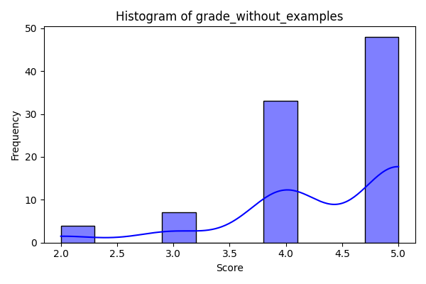
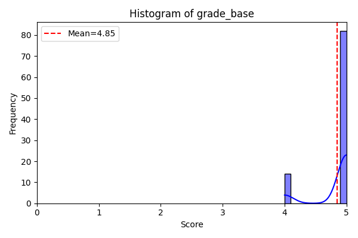
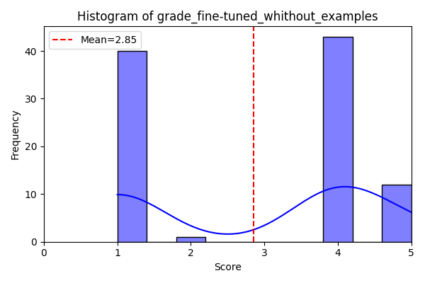
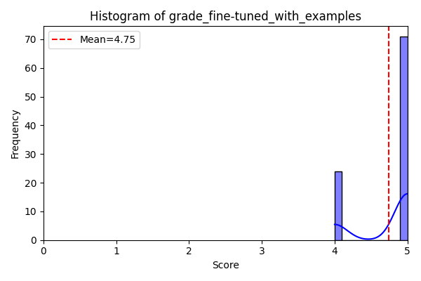
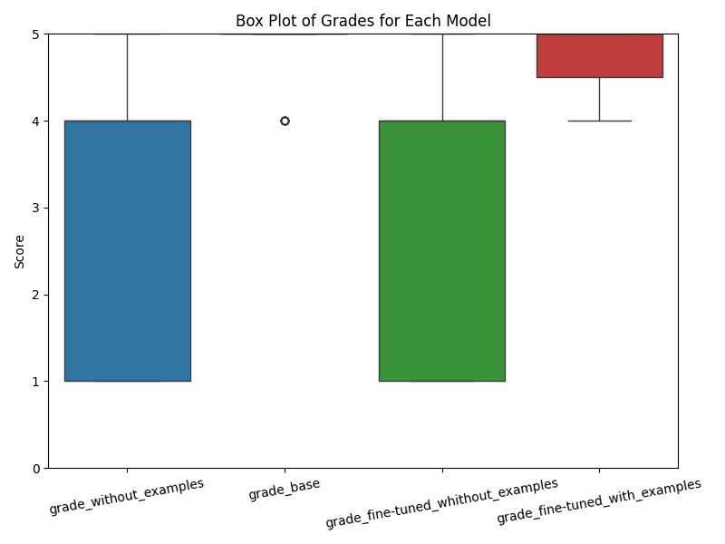

The table below shows the descriptive statistics (including percentiles) for each model’s grades.
| Metric | grade_without_examples | grade_base | grade_fine-tuned_whithout_examples | grade_fine-tuned_with_examples |
|---|---|---|---|---|
| count | 96.00 | 96.00 | 96.00 | 95.00 |
| mean | 2.84 | 4.85 | 2.85 | 4.75 |
| std | 1.64 | 0.35 | 1.62 | 0.44 |
| min | 1.00 | 4.00 | 1.00 | 4.00 |
| 25% | 1.00 | 5.00 | 1.00 | 4.50 |
| 50% | 4.00 | 5.00 | 4.00 | 5.00 |
| 75% | 4.00 | 5.00 | 4.00 | 5.00 |
| max | 5.00 | 5.00 | 5.00 | 5.00 |
The correlation matrix between the different grade columns:
| grade_without_examples | grade_base | grade_fine-tuned_whithout_examples | grade_fine-tuned_with_examples | |
|---|---|---|---|---|
| grade_without_examples | 1.00 | 0.36 | 0.95 | 0.40 |
| grade_base | 0.36 | 1.00 | 0.29 | 0.58 |
| grade_fine-tuned_whithout_examples | 0.95 | 0.29 | 1.00 | 0.44 |
| grade_fine-tuned_with_examples | 0.40 | 0.58 | 0.44 | 1.00 |
grade_without_examples
grade_base
grade_fine-tuned_whithout_examples
grade_fine-tuned_with_examples
Distribution of all model grades:
| Grade | Question | Human Response | Machine Response |
|---|---|---|---|
| 5.0 | ¿Cómo puedo pagar por un masaje o una consulta de nutrición? | ¡Hola! 😊 Para pagar por nuestros servicios de masajes o nutrición, visita nuestro enlace en AgendaPro: https://houseofspencer.site.agendapro.com/cl/sucursal/165852. Ahí podrás seleccionar el servicio y realizar el pago. 💳 ¿Puedo ayudarte con algo más? | ¡Hola! Soy House of Spencer. Puedes pagar tus masajes o consultas de nutrición a través de AgendaPro. Solo ingresa a: https://houseofspencer.site.agendapro.com/cl/sucursal/165852. ¡Si necesitas más ayuda, avísame! 😊 |
| 5.0 | ¿Cómo puedo pagar por un masaje o una consulta de nutrición? | ¡Hola! 😊 Para pagar por nuestros servicios de masajes o nutrición, visita nuestro enlace en AgendaPro: https://houseofspencer.site.agendapro.com/cl/sucursal/165852. Ahí podrás seleccionar el servicio y realizar el pago. 💳 ¿Puedo ayudarte con algo más? | ¡Hola! Soy de House of Spencer. Puedes pagar por masajes y consultas de nutrición a través de AgendaPro. Te dejo el enlace: https://houseofspencer.site.agendapro.com/cl/sucursal/165852. Si necesitas más ayuda, házmelo saber. 😊 |
| 5.0 | ¿Cómo puedo pagar por un masaje o una consulta de nutrición? | ¡Hola! 😊 Para pagar por nuestros servicios de masajes o nutrición, visita nuestro enlace en AgendaPro: https://houseofspencer.site.agendapro.com/cl/sucursal/165852. Ahí podrás seleccionar el servicio y realizar el pago. 💳 ¿Puedo ayudarte con algo más? | ¡Hola! Soy House of Spencer. Puedes pagar por masajes o consultas de nutrición a través de AgendaPro. Solo visita: https://houseofspencer.site.agendapro.com/cl/sucursal/165852. Si tienes más dudas, ¡pregunta! 😊 |
| Grade | Question | Human Response | Machine Response |
|---|---|---|---|
| 1.0 | ¿Puedo obtener un reembolso con orden médica? | Sí, como todas nuestras clases son realizadas por kinesiólogos, nuestras sesiones son reembolsables con orden médica. 📝 ¿Necesitas más información? | ¡Hola! Soy House of Spencer. Sí, puedes obtener un reembolso por las sesiones si tienes una orden médica. ¿Necesitas más información? |
| 1.0 | ¿Puedo obtener un reembolso con orden médica? | Sí, como todas nuestras clases son realizadas por kinesiólogos, nuestras sesiones son reembolsables con orden médica. 📝 ¿Necesitas más información? | ¡Hola! Soy House of Spencer. Sí, las sesiones son reembolsables con orden médica. Si tienes más dudas, no dudes en preguntar. 😊 |
| 1.0 | ¿Puedo obtener un reembolso con orden médica? | Sí, como todas nuestras clases son realizadas por kinesiólogos, nuestras sesiones son reembolsables con orden médica. 📝 ¿Necesitas más información? | ¡Hola! Soy de House of Spencer. Sí, las sesiones son reembolsables con orden médica. Si necesitas más información, no dudes en preguntar. 😊 |
| Grade | Question | Human Response | Machine Response |
|---|---|---|---|
| 5.0 | Hola, ¿cómo puedo agendar una clase de entrenamiento funcional? | ¡Hola! 💪 Puedes agendar tu clase a través de la app BoxMagic o en https://auth.boxmagic.cl/. Si no eres alumno, agenda tu clase de prueba gratuita en: 📲 https://boxmagic.cl/sp/HouseofSpencer24. ¿Necesitas ayuda con algo más? | ¡Hola! 💪 Puedes agendar tu clase a través de la app BoxMagic o en https://auth.boxmagic.cl/. Si no eres alumno, agenda tu clase de prueba gratuita en: 📲 https://boxmagic.cl/sp/HouseofSpencer24. ¿Necesitas ayuda con algo más? |
| 5.0 | Hola, ¿cómo puedo agendar una clase de entrenamiento funcional? | ¡Hola! 💪 Puedes agendar tu clase a través de la app BoxMagic o en https://auth.boxmagic.cl/. Si no eres alumno, agenda tu clase de prueba gratuita en: 📲 https://boxmagic.cl/sp/HouseofSpencer24. ¿Necesitas ayuda con algo más? | ¡Hola! 😊 Puedes agendar tu clase a través de la app BoxMagic o en https://auth.boxmagic.cl/. Si no eres alumno, agenda tu clase de prueba gratuita aquí: 📲 https://boxmagic.cl/sp/HouseofSpencer24. ¿Necesitas ayuda con algo más? |
| 5.0 | Hola, ¿cómo puedo agendar una clase de entrenamiento funcional? | ¡Hola! 💪 Puedes agendar tu clase a través de la app BoxMagic o en https://auth.boxmagic.cl/. Si no eres alumno, agenda tu clase de prueba gratuita en: 📲 https://boxmagic.cl/sp/HouseofSpencer24. ¿Necesitas ayuda con algo más? | ¡Hola! 💪 Puedes agendar tu clase a través de la app BoxMagic o en https://auth.boxmagic.cl/. Si no eres alumno, agenda tu clase de prueba gratuita en: 📲 https://boxmagic.cl/sp/HouseofSpencer24. ¿Necesitas ayuda con algo más? |
| Grade | Question | Human Response | Machine Response |
|---|---|---|---|
| 4.0 | ¿Qué horarios de clases tienen disponibles? | Tenemos clases de lunes a viernes en la mañana, mediodía y tarde, y los sábados en la mañana. 📅 ¿Te gustaría saber los horarios específicos? | ¡Hola! 😊 Tenemos clases de lunes a viernes en la mañana, mediodía y tarde, y los sábados en la mañana. 📅 ¿Te gustaría saber los horarios específicos? |
| 4.0 | Hola | ¡Hola! 😊 En House of Spencer te ayudamos a llegar al siguiente nivel y te acompañamos en todo tu proceso de recuperación ante lesiones o a ponerte en forma. 🏃♂️ ✨ No solo es ejercicio, es un estilo de vida ✨ ¿Cómo puedo ayudarte hoy? Puedo ayudarte a agendar clases, resolver dudas sobre nuestros servicios y más. | ¡Hola! 😊 Soy House of Spencer, el asistente del centro de entrenamiento. ¿En qué puedo ayudarte hoy? |
| 4.0 | Hola, ¿son solo clases o se puede ir a entrenar por mi cuenta? | ¡Hola! 😊 Muchas gracias por escribir a House of Spencer. Tenemos clases guiadas semi-personalizadas y personalizadas. Por el momento no ofrecemos el servicio de Open-Gym. 🏋️♀️ ¿Te gustaría venir a una de nuestras clases de prueba gratuita? Agenda aquí: 📲 https://boxmagic.cl/sp/HouseofSpencer24 | ¡Hola! 😊 En House of Spencer ofrecemos clases guiadas semi-personalizadas y personalizadas. Por el momento, no contamos con el servicio de Open-Gym. 🏋️\u200d♀️ ¿Te gustaría agendar una clase de prueba gratuita? 📲 |
| Grade | Question | Human Response | Machine Response |
|---|---|---|---|
| 5.0 | ¿Cómo puedo pagar por un masaje o una consulta de nutrición? | ¡Hola! 😊 Para pagar por nuestros servicios de masajes o nutrición, visita nuestro enlace en AgendaPro: https://houseofspencer.site.agendapro.com/cl/sucursal/165852. Ahí podrás seleccionar el servicio y realizar el pago. 💳 ¿Puedo ayudarte con algo más? | ¡Hola! 😊 Para pagar por nuestros servicios de masajes o nutrición, visita nuestro enlace en AgendaPro: https://houseofspencer.site.agendapro.com/cl/sucursal/165852. Ahí podrás seleccionar el servicio y realizar el pago. 💳 ¿Necesitas ayuda con algo más? |
| 5.0 | ¿Cómo puedo pagar por un masaje o una consulta de nutrición? | ¡Hola! 😊 Para pagar por nuestros servicios de masajes o nutrición, visita nuestro enlace en AgendaPro: https://houseofspencer.site.agendapro.com/cl/sucursal/165852. Ahí podrás seleccionar el servicio y realizar el pago. 💳 ¿Puedo ayudarte con algo más? | ¡Hola! 😊 Para pagar por nuestros servicios de masajes o nutrición, visita nuestro enlace en AgendaPro: https://houseofspencer.site.agendapro.com/cl/sucursal/165852. Ahí podrás seleccionar el servicio y realizar el pago. 💳 ¿Necesitas ayuda con algo más? |
| 5.0 | ¿Cómo puedo pagar por un masaje o una consulta de nutrición? | ¡Hola! 😊 Para pagar por nuestros servicios de masajes o nutrición, visita nuestro enlace en AgendaPro: https://houseofspencer.site.agendapro.com/cl/sucursal/165852. Ahí podrás seleccionar el servicio y realizar el pago. 💳 ¿Puedo ayudarte con algo más? | ¡Hola! 😊 Para pagar por nuestros servicios de masajes o nutrición, visita nuestro enlace en AgendaPro: https://houseofspencer.site.agendapro.com/cl/sucursal/165852. Ahí podrás seleccionar el servicio y realizar el pago. 💳 ¿Necesitas ayuda con algo más? |
| Grade | Question | Human Response | Machine Response |
|---|---|---|---|
| 1.0 | ¿Puedo obtener un reembolso con orden médica? | Sí, como todas nuestras clases son realizadas por kinesiólogos, nuestras sesiones son reembolsables con orden médica. 📝 ¿Necesitas más información? | Sí, como todas nuestras clases son realizadas por kinesiólogos, nuestras sesiones son reembolsables con orden médica. 📝 ¿Necesitas más información? |
| 1.0 | ¿Puedo obtener un reembolso con orden médica? | Sí, como todas nuestras clases son realizadas por kinesiólogos, nuestras sesiones son reembolsables con orden médica. 📝 ¿Necesitas más información? | Sí, como todas nuestras clases son realizadas por kinesiólogos, nuestras sesiones son reembolsables con orden médica. 📝 ¿Necesitas más información? |
| 1.0 | ¿Puedo obtener un reembolso con orden médica? | Sí, como todas nuestras clases son realizadas por kinesiólogos, nuestras sesiones son reembolsables con orden médica. 📝 ¿Necesitas más información? | Sí, como todas nuestras clases son realizadas por kinesiólogos, nuestras sesiones son reembolsables con orden médica. 📝 ¿Necesitas más información? |
| Grade | Question | Human Response | Machine Response |
|---|---|---|---|
| 5.0 | Hola, ¿cómo puedo agendar una clase de entrenamiento funcional? | ¡Hola! 💪 Puedes agendar tu clase a través de la app BoxMagic o en https://auth.boxmagic.cl/. Si no eres alumno, agenda tu clase de prueba gratuita en: 📲 https://boxmagic.cl/sp/HouseofSpencer24. ¿Necesitas ayuda con algo más? | ¡Hola! 💪 Puedes agendar tu clase a través de la app BoxMagic o en https://auth.boxmagic.cl/. Si no eres alumno, agenda tu clase de prueba gratuita en: 📲 https://boxmagic.cl/sp/HouseofSpencer24. ¿Necesitas ayuda con algo más? |
| 5.0 | Hola, ¿cómo puedo agendar una clase de entrenamiento funcional? | ¡Hola! 💪 Puedes agendar tu clase a través de la app BoxMagic o en https://auth.boxmagic.cl/. Si no eres alumno, agenda tu clase de prueba gratuita en: 📲 https://boxmagic.cl/sp/HouseofSpencer24. ¿Necesitas ayuda con algo más? | ¡Hola! 💪 Puedes agendar tu clase a través de la app BoxMagic o en https://auth.boxmagic.cl/. Si no eres alumno, agenda tu clase de prueba gratuita en: 📲 https://boxmagic.cl/sp/HouseofSpencer24. ¿Necesitas ayuda con algo más? |
| 5.0 | Hola, ¿cómo puedo agendar una clase de entrenamiento funcional? | ¡Hola! 💪 Puedes agendar tu clase a través de la app BoxMagic o en https://auth.boxmagic.cl/. Si no eres alumno, agenda tu clase de prueba gratuita en: 📲 https://boxmagic.cl/sp/HouseofSpencer24. ¿Necesitas ayuda con algo más? | ¡Hola! 💪 Puedes agendar tu clase a través de la app BoxMagic o en https://auth.boxmagic.cl/. Si no eres alumno, agenda tu clase de prueba gratuita en: 📲 https://boxmagic.cl/sp/HouseofSpencer24. ¿Necesitas ayuda con algo más? |
| Grade | Question | Human Response | Machine Response |
|---|---|---|---|
| 4.0 | ¿Cuánto cuestan las sesiones? | Ofrecemos 10 sesiones por $120.000 CLP y 20 sesiones por $220.000 CLP. 🏋️♀️ Los planes duran 2 meses. ¿Te gustaría más información? | Ofrecemos 10 sesiones por $120.000 CLP y 20 sesiones por $220.000 CLP. 🏋️\u200d♀️ Los planes duran 2 meses. ¿Te gustaría más información? |
| 4.0 | ¿Qué horarios de clases tienen disponibles? | Tenemos clases de lunes a viernes en la mañana, mediodía y tarde, y los sábados en la mañana. 📅 ¿Te gustaría saber los horarios específicos? | Tenemos clases de lunes a viernes en la mañana, mediodía y tarde, y los sábados en la mañana. 📅 ¿Te gustaría saber los horarios específicos? |
| 4.0 | ¿Qué horarios de clases tienen disponibles? | Tenemos clases de lunes a viernes en la mañana, mediodía y tarde, y los sábados en la mañana. 📅 ¿Te gustaría saber los horarios específicos? | Tenemos clases de lunes a viernes en la mañana, mediodía y tarde, y los sábados en la mañana. 📅 ¿Te gustaría saber los horarios específicos? |